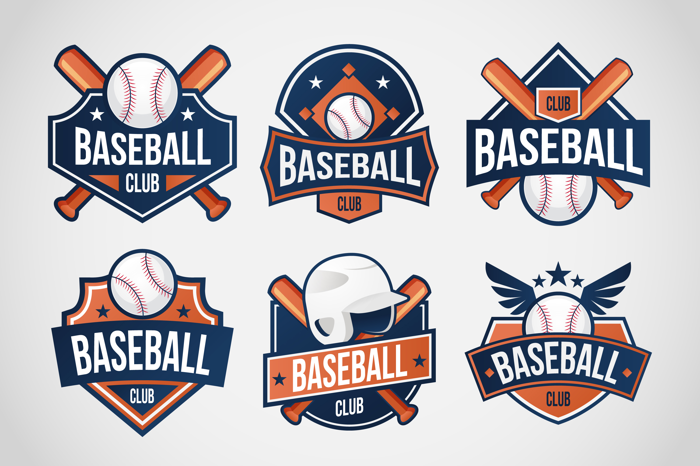

Hello. My name is Phil Han. I am a data analyst/data scientist based in Washington D.C.
As economics is not as a theretical apparatus, but a way of thinking about the world
according to a prominent economist, Ken Elzinga, I believe data science helps you think about
the world and provides actionable insights to tackle problems in the world. Below is a project
that I worked on with a partner in graduate school. It has recently been selected as a proof of concept by
a tech startup in the insurance indury to further develop a machine learning model that predicts a buyer's
propensity to purchase a life insurance.
This project predicts whether or not a buyer will purchase a life insurance.
This baseball-themed project will predict future Hall of Fame hitters in MLB.

Analyzing the Safety of Air Travel with Data Visualization.
This project forecasts GDP per capita and fertility rate for South Korea.
This is a movie recommender system with the MovieLens Datasets.
This project generates hand-written images from MNIST dataset with variational autoencoders.
This project uses machine learning algorithm to predict a World Series winner in MLB.
This is a movie sentiment analysis using classification models and clusters.

Exploratory Data Analysis on Major Leagues (American and National) and Attendance.
This Weather App displays the current weather information based on a user input of any locations in the U.S.